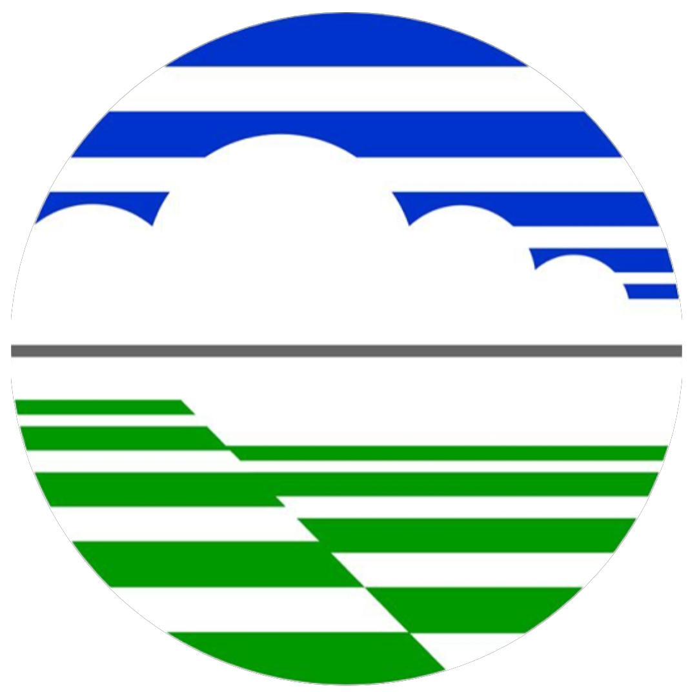

Diseminasi WhatsApp
1. Masukkan Data ME48
Copy-Paste dari File ME48 (TSV)
Paste minimal 4 baris data dari jam pengamatan terakhir.
Data error atau tidak lengkap!
Hasil Ekstrak Data:
Jam (WIB)
-
Jam (UTC)
-
Jarak Pandang
-
Suhu
-
Kelembaban
-
Cuaca
-
Angin
-
2. Pratinjau Pesan WhatsApp
Teks akan muncul di sini...
📋 Copy Teks
📲 Share WA